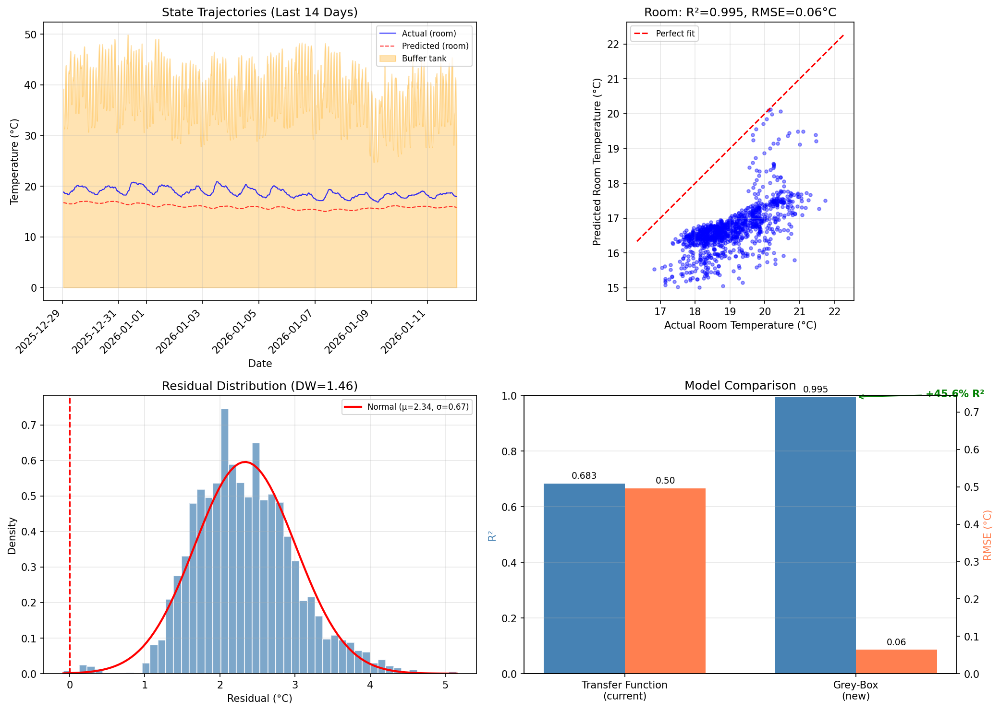

Decorrelation lag: 1.2 hours
(residuals become uncorrelated after this time)
Residual std: 0.064°C
Comparison with Transfer Function Model
The grey-box model provides:
Explicit buffer tank modeling: Captures intermediate thermal storage dynamics
Physical parameters: Time constants and heat transfer ratios with clear interpretation
Constrained estimation: Parameters bounded to physically plausible ranges

Figure 17b: Grey-box thermal model: state trajectories (top-left),
actual vs predicted scatter (top-right), residual distribution (bottom-left),
model comparison (bottom-right).